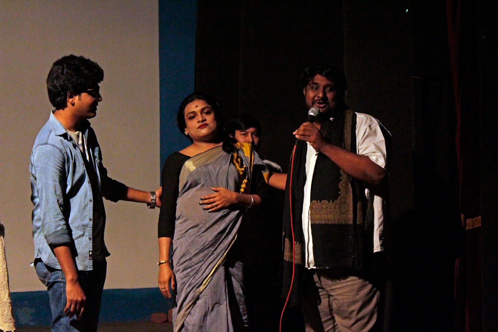

Voices from our wounded times
Our monthly screening on Sunday the 8th featured screening of six short documentaries, tied together around the notion of the power of memory against forgetting, of the remembering of a home lost to violence, and of small voices of history standing up against fascism.
The films screened were - Tea Vendor's Mann ki Baat (directed by Sanu Kummil), Welcome Valentine 2017 (directed by Dhruv Girish Satija), Finding Prayers (directed by Nilay Samiran Nandi), Memoirs of Saira and Salim (directed by Eshwarya Grover), A Season in my Paradise (directed by Shahzaib Naik and Seraj Ali) and You Can Destroy the Body (directed by Anand Patwardhan).
The crew members of the film Finding Prayers (Nilay, Bobby Kamalini, Arnab and Debadrita) participated in the screening and interacted with the audience.
Marking the dark day of demolition of the Babri Masjid (6th Dec), it was also for most of us a moment of reflection staring at the crossroads at which our country stands today - with the citizenship bill and NRC looming large over our heads, communal polarisation overshadowing people's concerns and divisive forces taking over people's voices.
Photograhy: Suman Kayal